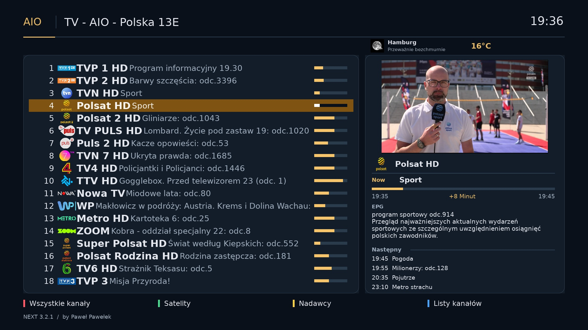
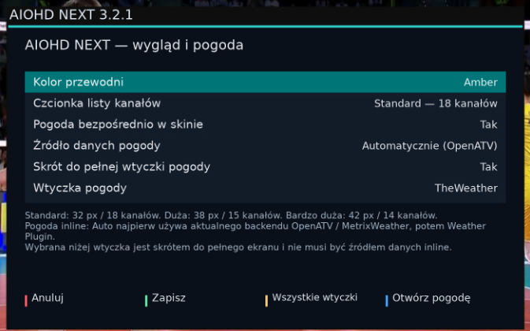
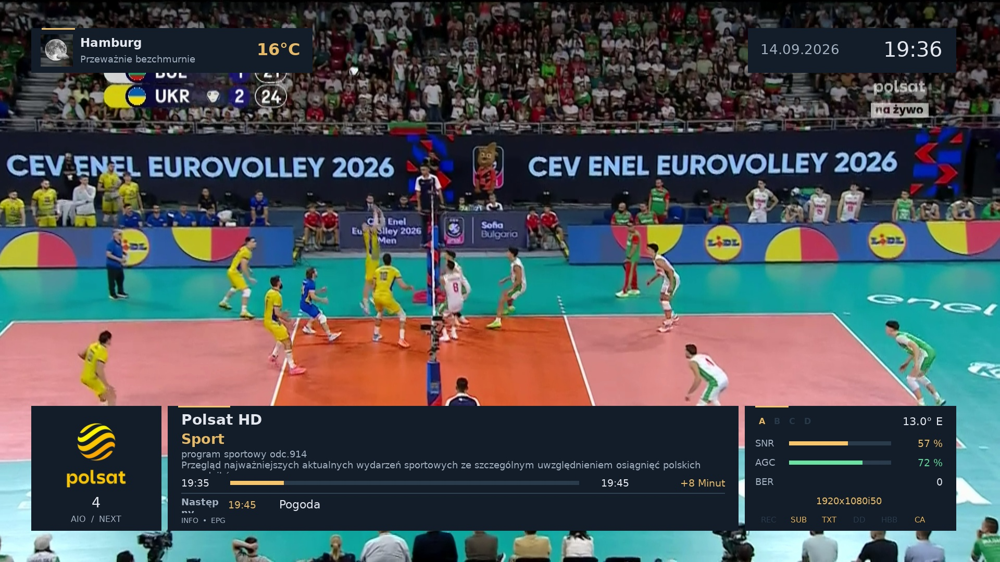
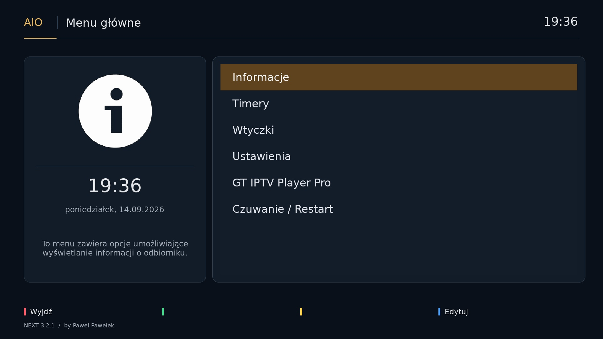
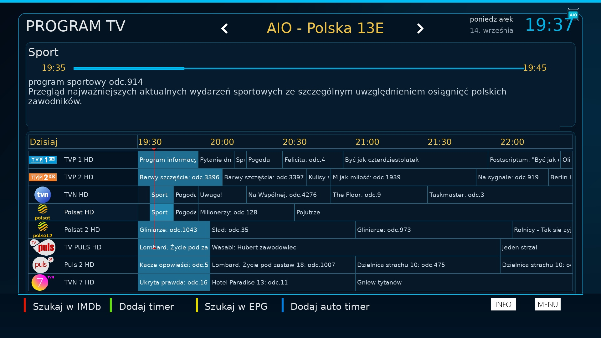

Nowy projekt Paweł Pawełek
NOWOŚĆ • Skin Full HD • 14.09.2026
🎨 AIOHD NEXT 3.2.1
Nowoczesny skin dla OpenATV / Enigma2 Python 3. Czytelna lista kanałów z MiniTV, rozbudowane EPG, opis audycji w InfoBarze, pogoda bezpośrednio w skinie oraz trzy warianty kolorystyczne.

Najważniejsze możliwości AIOHD NEXT
- nowoczesny interfejs Full HD 1920×1080
- podgląd TV MiniTV na liście kanałów
- prawy panel z nazwą kanału, bieżącą audycją, czasem, paskiem postępu, wielowierszowym opisem EPG i 4 następnymi audycjami
- kompaktowy InfoBar z tytułem, opisem trwającej audycji, postępem i następnym programem
- pełny opis w przewijanym Event Information
- rozbudowany ekran programu TV / EPG
- pogoda bezpośrednio w skinie
- trzy warianty kolorystyczne: Aurora, Amber, Violet
🔤 3 rozmiary listy kanałów
- Standard — 32 px / około 18 kanałów
- Duża — 38 px / około 15 kanałów
- Bardzo duża — 42 px / około 14 kanałów
W trybie dwuliniowym skin dopasowuje liczbę pozycji odpowiednio do wybranego rozmiaru.
🎨 3 warianty kolorystyczne
Kolor przewodni można zmienić bez instalowania osobnej paczki:
- Aurora — chłodny turkus
- Amber — bursztynowe akcenty
- Violet — fioletowy wariant
🌤 Pogoda w skinie
Na ekranie mogą być widoczne: ikona pogody, miejscowość, temperatura i aktualne warunki. Tryb Automatycznie (OpenATV) korzysta z kompatybilnych źródeł danych OpenATV / MetrixWeather, a w razie potrzeby z Weather Plugin.
Osobno można wybrać zainstalowaną w systemie wtyczkę pogodową jako skrót do jej pełnego ekranu. Nie każda wtyczka pogodowa udostępnia wspólne API danych inline, dlatego źródło danych i launcher są rozdzielone.
📺 EPG i InfoBar
Skin pokazuje więcej informacji bez zasłaniania obrazu: aktualny program, opis, czas i postęp, kolejny program oraz cztery kolejne pozycje na liście kanałów.
Ekran EPG zachowuje czytelny układ godzinowy i picony kanałów.
Ustawienia AIOHD NEXT
Otwórz Wtyczki → AIOHD NEXT — Style. Dostępne są m.in.:
- Kolor przewodni
- Czcionka listy kanałów
- Pogoda bezpośrednio w skinie
- Źródło danych pogody
- Skrót do pełnej wtyczki pogody
- Wybór zainstalowanej wtyczki pogodowej
Galeria





Plik i wymagania
Wersja widoczna: 3.2.1
Rewizja IPK: r3
Data: 14.09.2026
Plik: enigma2-plugin-skins-aiohd-next_3.2.1-r3_all.ipk — 7.38 MB
SHA-256: b2c4ed0d4e8d69e745e60019639a852e2175ce8a179239c3202609791f03ea15
Wymagania: Enigma2, Python 3, enigma2-plugin-skins-metrix-atv.
Autor modyfikacji: Paweł Pawełek. Baza: MetrixHD.
Instalacja
Najprościej: AIO Panel 16.0.3 → Skórki → AIOHD NEXT - Instalator.
wget -q --no-check-certificate "https://github.com/OliOli2013/AIOHD-NEXT-Skin/releases/download/3.2.1-r3/enigma2-plugin-skins-aiohd-next_3.2.1-r3_all.ipk" -O /tmp/aiohd-next.ipk && opkg install /tmp/aiohd-next.ipk && rm -f /tmp/aiohd-next.ipkPo instalacji wybierz AIOHD w ustawieniach skina i wykonaj Restart GUI.